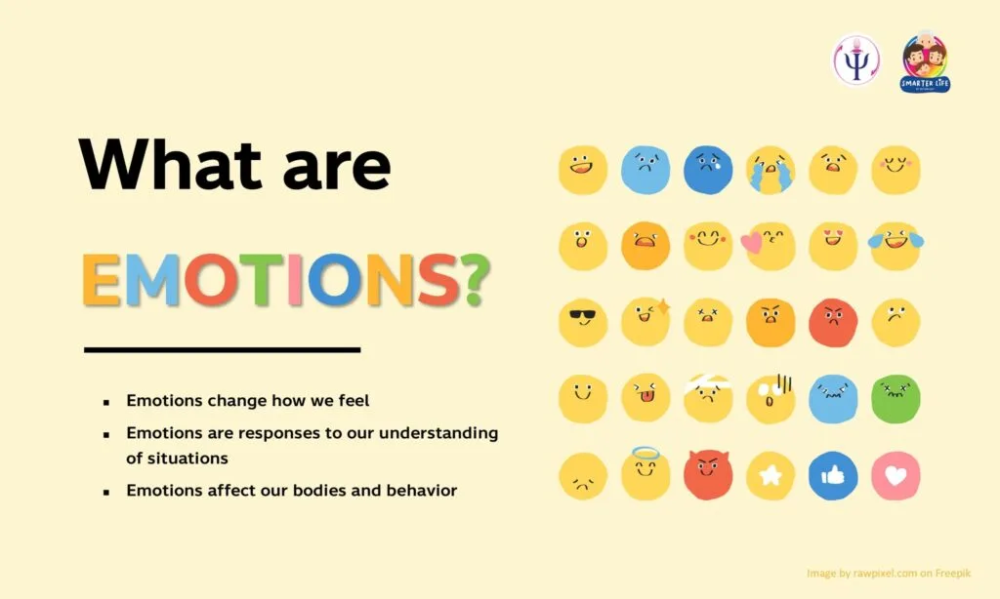

Expanded Nursing Uganda Explanation
Emotions should be understood beyond a short definition. Link the concept to patient history, focused assessment, common risks, nursing priorities, documentation and evaluation of outcomes.
Contents — 29 sections (tap to expand)
01 Emotions
The word "emotion" is derived from the Latin word "emovere," meaning "to move away, from, to excite, or to stir." Therefore, an emotion can be understood as:
- A state of an individual that deprives him or her of equilibrium.
- Psycho-physiological states arising from either pleasant or unpleasant feelings.
- Strong feelings of excitement or perturbation, which may be pleasant or unpleasant, and are usually accompanied by an impulse to carry out a certain activity.
02 Three Components of Emotion
To fully understand emotion in a psychological context, it is helpful to break it down into three distinct but interacting components:
- Subjective Experience (Cognitive): This is the personal, conscious awareness of the feeling (e.g., "I feel afraid"). It involves the labeling of the emotion based on the situation.
- Physiological Response (Biological): The internal physical changes that occur, such as heart rate increasing, sweating, or hormonal shifts (adrenaline).
- Behavioral/Expressive Response: The outward signs of the emotion, such as facial expressions (smiling, frowning), body language (clenching fists), or tone of voice.
03 Major Theories of Emotion
Psychologists have proposed several theories to explain the relationship between the physiological reaction and the subjective experience of emotion:
- James-Lange Theory: Suggests that the physiological reaction happens first , and the brain interprets this physical change as an emotion. (e.g., "I am trembling, therefore I must be afraid").
- Cannon-Bard Theory: Argues that the physiological reaction and the emotional experience happen simultaneously and independently. One does not cause the other.
- Schachter-Singer (Two-Factor) Theory: Proposes that emotion is a result of physiological arousal plus a cognitive label. We feel arousal, look to the environment to explain it, and then label the emotion accordingly.
04 Types of Emotions
While there are numerous emotional states, they can broadly be categorized into primary emotions from which others stem. The basic types commonly identified are anger (annoyance), fear, and love. Other descriptive terms often represent variations, degrees, or combinations of these core emotions:
- Anger: Includes annoyance, frustration, irritation, rage.
- Fear: Includes worry, anxiety (mild and continuous fear), apprehension, fright, terror.
- Love: Includes joy, happiness, liking, affection, desire, willingness, wanting, attraction.
- Other: Emotions like sadness, surprise, jealousy, and envy are often seen as combinations or more complex forms of these basic emotions. For instance, jealousy and envy can be a combination of love, anger, and fear.
These basic emotions are considered fundamental as they promote survival by guiding responses to environmental stimuli.
In addition to the broad categories above, psychological research (notably by Paul Ekman) suggests there are 6 universal facial expressions recognized across almost all cultures:
- Happiness
- Sadness
- Fear
- Disgust
- Anger
- Surprise
05 Physiology of Emotions
Both the expression and experience of emotions are deeply rooted in physiological arousal, primarily reflecting the activity of the Autonomic Nervous System (ANS). The ANS has a vast network of fibers that connect to all internal organs. It comprises two main divisions:
- Sympathetic Nervous System: When activated by psychological and physical threats, it stimulates the secretion of epinephrine (adrenaline) and norepinephrine (noradrenaline) from the adrenal glands into the bloodstream. This prepares the body for "fight or flight" responses, increasing heart rate, blood pressure, and energy availability.
- Parasympathetic Nervous System: This division works to calm the body, promoting "rest and digest" functions and returning physiological systems to a baseline state.
Due to the release of hormones by the sympathetic nervous system, physiological arousal can persist for a period even after the immediate threat has passed, explaining why emotional states can linger.
While the ANS handles the body's response, the brain's Limbic System is the control center for processing emotions:
- Amygdala: Critical for processing fear and aggression. It acts as an alarm system, assessing threats before the conscious mind even fully processes them.
- Hippocampus: Linked to memory. It helps form memories of emotional events (e.g., remembering a place where you felt safe vs. threatened).
- Hypothalamus: Regulates the ANS and triggers the release of hormones, effectively translating the brain's emotional state into physical changes in the body.
06 Effects of Emotions on the Body and Mind
While emotions are a natural part of human experience, intense or prolonged emotional states, particularly unpleasant ones, can have significant detrimental effects on both physical and mental health:
- Inhibition of Cognitive Functions: During strong emotions, cognitive processes such as thinking, reasoning, and memory can be inhibited or impaired.
- Physiological Disruptions: Digestion can slow or stop during intense emotional states.
- Gastrointestinal Issues: Prolonged emotional stress can lead to excessive production of hydrochloric acid in the stomach, contributing to conditions like peptic ulcers. This is often seen in individuals who experience chronic worry.
- Psychosomatic Disorders: A significant number of diseases are known to be a direct or indirect result of prolonged emotional distress. These include: Certain forms of hypertension (high blood pressure)
- Heart diseases
- Asthmatic conditions
- Impotence
- Various skin diseases
- Migraine headaches
- Worsening Patient Condition: For individuals who are ill, emotional distress can worsen their condition and significantly delay recovery.
- Energy Release for Survival: The physical tension experienced during fear, for instance, is a survival response common to all mammals. It prepares the body to either "stay and fight" or "run away," both requiring a surge of strength and energy. Physical changes facilitated by the body during intense emotions, such as increased breathing and heart rate, are designed to release more energy to the tissues by enhancing oxygen and glucose delivery for metabolism.
07 The Sociology of Emotions
In sociology, emotions are not just biological reactions but are also shaped by social structures and cultural norms. Nurses must understand the social context of their patients' emotions.
- Emotional Labor: Defined by Arlie Hochschild, this refers to the effort required to manage feelings and facial expressions as part of one's job. Nurses perform emotional labor constantly (e.g., remaining calm and smiling while dealing with a difficult patient or hiding disgust while dressing a severe wound).
- Feeling Rules: Every society has unwritten rules about what we should feel in certain situations (e.g., feeling sad at a funeral, feeling happy at a wedding). Patients may experience distress if they feel their emotions do not match these societal expectations.
- Cultural Variations: Different cultures have different "display rules." Some cultures encourage the open expression of pain and grief, while others value stoicism and silence. A nurse must interpret emotions through a culturally competent lens.
08 Common Defense Mechanisms
According to psychoanalytic theory (Freud), individuals often use unconscious strategies to cope with negative emotions and anxiety. Nurses often encounter these in patients:
- Denial: Refusing to accept reality (e.g., a patient refusing to believe a cancer diagnosis).
- Displacement: Redirecting emotions from the original source to a safer target (e.g., a patient angry at the doctor yelling at the nurse).
- Projection: Attributing one's own unacceptable feelings to others (e.g., a hostile patient accusing the nurse of being hostile).
- Regression: Reverting to an earlier stage of development (e.g., an adult patient becoming childlike and dependent during illness).
- Rationalization: Creating logical excuses for illogical feelings or behaviors.
09 Controlling Emotions (General Strategies for Individuals)
Given the potential harm of prolonged or intense negative emotions, especially when experienced during challenging life events, learning to manage them is crucial. While personality plays a role in how individuals react, certain strategies can help in controlling emotional responses:
- Prepare for Traumatic Experiences: It's important not to shut your mind to the inevitability of certain difficult events (e.g., loss of loved ones, failure). By contemplating how you might react to such possibilities, you can mentally prepare, making the actual occurrence less intensely upsetting. This involves being realistic, not pessimistic.
- Accept Your Emotions: Acknowledge and accept that you have emotions. Do not pretend to be unaffected by disappointment or try to hide feelings like love. Suppression can be counterproductive.
- Avoid Isolation: If you are facing problems, do not isolate yourself. Mix with friends and fully participate in social activities, whether work-related or recreational. Social support is vital.
- Develop Problem-Solving Skills: Learning to successfully solve problems builds confidence and reduces feelings of hopelessness or helplessness when challenged by emotions.
- Examine the Objective Situation: Try to objectively assess the situation that is causing emotional distress. Understanding the facts can help in managing your reactions.
- Gain Perspective: Remind yourself that many people in the world face worse situations but have coped and continued living. This can help in contextualizing your own struggles.
- Manage Public Speaking Anxiety: If you fear public speaking, remind yourself that you are capable. Stay calm, take deep breaths, start with short sentences, and gradually build confidence.
- Get Enough Rest: Aim for 7-9 hours of sleep. Insufficient sleep can lead to more intense emotional responses to routine upsets.
- Eat Well and Exercise: A healthy diet makes you less vulnerable to illnesses and can positively influence mood. Exercise promotes cardiovascular health and the production of endorphins, brain chemicals that help maintain calmness.
- Learn to Soothe Yourself: Focus on your strengths and work to change negative self-judgments. Develop personal strategies for self-comfort.
- Seek Information: Gather information about the stress or emotional challenge you are facing. Knowledge can help defeat fear and uncertainty.
- Talk to Trusted Others: Cultivate a small circle of 2-3 trusted individuals (family or friends) with whom you can share your most intimate thoughts and feelings without judgment.
- Plan Emotional Responses: If you find certain emotions consistently cause you trouble, proactively think through how you want to respond the next time you experience similar feelings (e.g., anger, fear, sadness).
- Incorporate Enjoyable Activities: Dedicate time each day to something fun or enjoyable. This serves as a mental vacation from worries and troubles.
- Help Others: Assisting others in similar circumstances can provide a new perspective on your own situation and foster a sense of purpose.
- Consider Therapy: If intense negative emotions significantly interfere with daily functioning, professional help from a therapist or counselor may be necessary.
10 Emotional Intelligence (EQ) in Nursing
Emotional Intelligence is the ability to recognize, understand, and manage our own emotions and the emotions of others. It is a critical skill for nurses. High EQ involves:
- Self-Awareness: Recognizing one's own emotional triggers and states.
- Self-Regulation: Controlling impulsive feelings and behaviors (e.g., remaining professional when provoked).
- Motivation: Using emotions to pursue goals with energy and persistence.
- Empathy: Understanding the emotional makeup of other people; essential for patient care.
- Social Skills: Managing relationships and building networks.
11 Management of Patients with Different Emotional States and Role of a Nurse
Emotions can significantly impact a patient's recovery. Therefore, it is crucial for healthcare professionals, especially nurses, to help patients manage their emotional states effectively.
Desired Attitude and Role of a Nurse in Managing Patients with Emotional States:
- Recognize the Impact: Understand that intense emotions can inhibit recovery and contribute to physical symptoms. The patient's mind needs to be as free as possible from overwhelming emotional distress.
- Collaboration with Professionals: For complex or severe emotional issues, collaborate with social workers, psychologists, psychiatrists, or other charitable individuals who can provide specialized support.
- Establish Good Rapport: Build a trusting and positive relationship with the patient from the very beginning. A strong nurse-patient relationship creates a safe space for emotional expression.
- Provide Reassurance: Reassure the patient not only through tactful words but, more importantly, through consistent and supportive actions. Your presence, attentiveness, and care convey reassurance.
- Maintain Professional Confidentiality/Discretion: Never discuss a patient's condition or sensitive information within their hearing or in a way that could cause them distress. Always use appropriate language and timing.
- Keep the Patient Occupied (Occupational Therapy): Engage patients in meaningful activities that divert their attention from negative emotions and foster a sense of purpose and normalcy. This can include: Referring them to an occupational therapy department.
- Introducing them to other patients of similar age, interests, educational background, or those recovering from similar conditions. This can foster peer support and reduce feelings of isolation.
- Avoid Emotionally Arousing Situations: Be mindful of factors that might trigger or escalate negative emotions in patients. This includes managing visitors, discussing sensitive topics, or exposing them to distressing news or environments.
- Active Listening and Empathy: Listen attentively to the patient's emotional expressions and validate their feelings. Show empathy, even if you don't fully understand the depth of their emotion.
- Provide Information and Education: Where appropriate, provide clear, concise, and honest information about their condition and treatment. This can reduce anxiety stemming from uncertainty.
- Promote Healthy Coping: Encourage and teach patients healthy coping mechanisms, such as relaxation techniques, mindfulness, or controlled breathing exercises, as appropriate.
- Observe and Document: Continuously observe and document the patient's emotional state and responses to interventions. This helps in tailoring care and communicating effectively with the healthcare team.
- Maintain a Calm Demeanor: Nurses should strive to maintain a calm and composed demeanor, as their emotional state can influence the patient's.
To effectively manage patient emotions, a nurse must also manage their own professional well-being:
- Compassion Fatigue: A condition characterized by physical and emotional exhaustion resulting from the chronic exposure to patients' suffering. It is often called the "cost of caring."
- Signs: Reduced ability to feel empathy, irritability, fatigue, and dreading going to work.
- Prevention: Requires strict boundaries between work and home life, debriefing difficult cases with colleagues, and prioritizing self-care routines.
12 Motivation
Motivation is derived from the Latin word "movere," meaning "to move." It is the driving force that initiates, guides, and maintains goal-oriented behaviors. In a healthcare context, understanding motivation is essential for encouraging patient compliance and managing staff effectively.
13 Types of Motivation
- Intrinsic Motivation: Driven by internal rewards. The behavior is performed because it is personally satisfying or rewarding (e.g., a nurse studying because they love learning about anatomy).
- Extrinsic Motivation: Driven by external rewards or the avoidance of punishment (e.g., working overtime to earn extra money or following protocols to avoid disciplinary action).
- Unconscious Motivation: Hidden impulses and drives that influence behavior without the individual's conscious awareness (a concept central to Freudian psychology).
14 The Motivational Cycle
Motivation is often viewed as a cycle consisting of three stages:
- Need (Drive): A state of deficiency or lack (e.g., hunger, need for safety).
- Instrumental Behavior: The action taken to satisfy the need (e.g., looking for food, visiting a doctor).
- Goal (Relief): The achievement of the desire, resulting in the reduction of the drive and a temporary state of equilibrium.
15 Theories of Motivation
Abraham Maslow proposed that human motivation is arranged in a hierarchy. Lower-level needs must be met before higher-level needs become motivating factors.
- Physiological Needs (Base): Basic survival needs: air, water, food, sleep, homeostasis. ( Nursing implication: Ensure patient can breathe, eat, and rest ).
- Safety Needs: Security of body, employment, resources, health. ( Nursing implication: Prevent falls, infection control, job security for staff ).
- Love/Belonging Needs: Friendship, family, intimacy. ( Nursing implication: Allow family visits, therapeutic nurse-patient relationship ).
- Esteem Needs: Self-esteem, confidence, achievement, respect of others.
- Self-Actualization (Top): Achieving one's full potential, including creative activities.
Freud suggested that motivation is driven by two unconscious instincts: Eros (life instinct/survival/sex) and Thanatos (death instinct/aggression).
16 Significance of Motivation in Nursing
- Patient Adherence: Motivating patients to follow treatment plans, take medication, and attend therapy.
- Lifestyle Changes: Helping patients find the drive to quit smoking, lose weight, or exercise.
- Learning: Motivation is a prerequisite for learning; a patient must want to learn about their condition to understand it.
17 Frustrations
Frustration is the emotional state that occurs when a person is blocked from reaching a desired goal or satisfying a need. It is a common experience in hospital settings for both patients (delayed recovery) and staff (lack of resources).
18 Sources of Frustration
- External Factors: Physical Obstacles: Locked doors, traffic jams, lack of money, drought.
- Social/Legal Obstacles: Rules, regulations, cultural norms that restrict behavior.
- Internal (Personal) Factors: Physical Limitations: Illness, disability, or lack of physical strength.
- Psychological Limitations: Lack of intelligence, skill, or confidence; conflicting desires.
19 Reactions to Frustration
Individuals respond to frustration in various ways, often depending on their personality and the severity of the obstacle:
- Aggression (Direct): Attacking the source of the frustration (e.g., a patient shouting at a nurse because the doctor is late).
- Displaced Aggression: Directing anger toward a safer target rather than the actual source (e.g., kicking a door or yelling at a spouse after a bad day at work).
- Regression: Reverting to childish behaviors like crying, sulking, or throwing tantrums.
- Withdrawal/Apathy: Giving up and becoming indifferent. This is common in chronic illness when patients feel helpless.
- Compromise/Substitution: Accepting a different goal or solution (e.g., if a student cannot become a doctor, they may choose to become a nurse).
20 Conflicts
Conflict is a psychological state of tension resulting from the presence of two or more opposing needs, drives, or wishes. It often arises when a person must choose between incompatible options.
21 Types of Motivational Conflicts (Lewin’s Classification)
- Approach-Approach Conflict: Choosing between two desirable alternatives. (e.g., Choosing between two great job offers). This is usually the least stressful conflict.
- Avoidance-Avoidance Conflict: Choosing between two undesirable alternatives. (e.g., A patient must choose between risking a dangerous surgery or continuing to suffer from a painful illness). This causes high anxiety ("caught between a rock and a hard place").
- Approach-Avoidance Conflict: A single goal has both positive and negative aspects. (e.g., A person wants to eat sugar because it tastes good [approach] but fears diabetes [avoidance]). This causes vacillation (wavering back and forth).
- Double Approach-Avoidance Conflict: Choosing between two complex goals, both of which have pros and cons. (e.g., Choosing between a high-paying job in a city you hate vs. a low-paying job in a city you love).
22 Conflict Resolution Strategies
In a clinical setting, nurses must help resolve conflicts:
- Clarification: Helping the patient clearly identify the pros and cons of their choices.
- Information Giving: Reducing uncertainty by explaining medical facts.
- Active Listening: Allowing the patient to vent feelings associated with the conflict.
- Collaboration: Working together to find a "middle ground" solution.
23 Attitude and Perception
Attitudes and perceptions are the lenses through which individuals view the world. They dictate how a patient views their illness and how a nurse views their patient.
24 Attitude
An attitude is a relatively stable predisposition to respond to a person, object, or idea in a consistently favorable or unfavorable way.
- A - Affective (Feeling): The emotional reaction. (e.g., "I am scared of injections.")
- B - Behavioral (Action): The tendency to act. (e.g., "I will avoid going to the doctor.")
- C - Cognitive (Belief): The thoughts and beliefs. (e.g., "Injections are painful and unnecessary.")
- Adaptive/Utilitarian: Helping us gain rewards and avoid punishment.
- Ego-Defensive: Protecting our self-esteem (e.g., holding a prejudice against others to feel superior).
- Value-Expressive: Allowing us to express our core values and identity.
- Knowledge: Helping us organize and understand the complex world.
Nurses often need to change negative health attitudes (e.g., regarding vaccination or diet):
- Provide Credible Information: Use facts from trusted sources.
- Use Fear Appeals (Cautiously): Highlighting the dangers of non-compliance (must be paired with a solution).
- Role Modeling: Demonstrating healthy behaviors.
25 Perception
Perception is the cognitive process of selecting, organizing, and interpreting sensory information to give meaning to the environment. It is how we make sense of what we see, hear, and feel.
- Input/Sensation: Sensory organs receive stimuli.
- Selection: The brain chooses which stimuli to pay attention to (we ignore background noise to hear a conversation).
- Organization: The brain arranges stimuli into patterns (Gestalt principles).
- Interpretation: Assigning meaning based on past experiences, culture, and memory.
- Physiological Factors: Poor eyesight, hearing loss, fatigue, or pain can distort perception.
- Psychological Factors: Mood, motivation, and expectations. (e.g., A hungry person perceives food smells more acutely).
- Social/Cultural Factors: Cultural background dictates how we interpret pain, touch, and eye contact.
- Illusion: A misinterpretation of a real external stimulus (e.g., Mistaking a hanging coat for a person in the dark).
- Hallucination: A sensory perception without any external stimulus (e.g., Hearing voices when no one is speaking). Common in psychiatric disorders.
- Stereotyping: Generalizing a group of people based on a few characteristics, often leading to bias in healthcare.
- Halo Effect: Forming a general impression of a person based on a single characteristic (e.g., Assuming a well-dressed patient is compliant and intelligent).
- Assessment: Check if the patient is oriented to time, place, and person.
- Validation: Do not assume; ask the patient to explain what they are experiencing.
- Environment: Reduce sensory overload (noise, lights) to help patients with perceptual difficulties.
26 Nursing Uganda Clinical Lens
Use Emotions as a practical nursing topic, not only a memorized definition. Turn the topic into practical nursing knowledge: meaning, assessment, care priorities, teaching and evaluation.
- What to understand first: define emotions, identify the normal or expected pattern, then explain what changes when the patient is unwell.
- Why it matters in care: the nurse must recognize risk early, explain findings clearly, document accurately and know when to escalate.
- How to revise it: connect each point to assessment, nursing diagnosis or care problem, intervention, rationale and evaluation.
27 Assessment Guide
- Key definitions, patient history, focused observations and risk factors.
- Findings that are normal, abnormal or urgent.
- Resources, referral needs and documentation requirements.
28 Nursing Priorities, Rationales and Outcomes
- Protect safety, comfort, dignity and infection prevention.
- Provide clear care, education and escalation when needed.
- Evaluate response and record what changed.
The rationale for these priorities is patient safety: nursing actions should prevent deterioration, reduce discomfort, support recovery and create clear evidence for the next caregiver.
- Expected outcome: The topic is understood in a way that supports safe nursing judgement and revision.
29 Patient Teaching and Revision Check
- Explain emotions in simple language the patient or caregiver can repeat back.
- Teach warning signs, medicine or follow-up instructions, hygiene or lifestyle points where relevant.
- For exams, prepare a short answer using: definition, causes or risk factors, signs, assessment, management, complications and prevention.
- For ward practice, document baseline findings, actions taken, patient response and the plan for review.
Illustrations and Diagrams (1)

Related Video Lectures
Watch nursing lecture videos on YouTube for this topic. Opens in a new tab.
Watch on YouTubeExternal link: YouTube may use its own cookies and terms. Nursing Uganda is not affiliated with YouTube.